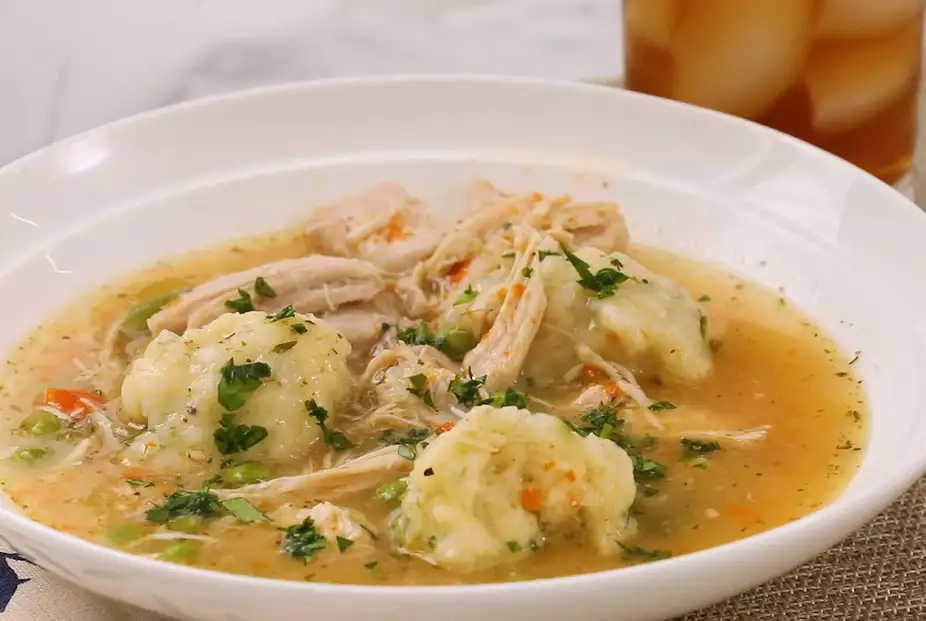

Chicken and Dumplings

Description
This recipe creates the richness of chicken stew without the fuss of using a whole chicken! Delve into This
compromise of a recipe that is boneless skinless chicken thighs with bone-in chicken breast.It gives the entire
spectrum of rich taste while being easy to prepare.
It's basically chicke pot pie made in a pressure cooker rather than an oven!
Ingredients
- 1/2 tablespoon olive oil
- 1 cup diced onion
- 1/2 cup diced carrot
- 1/2 cup diced celery
- 1 bay leaf
- 4 cups low-sodium chicken broth
- 1 pound boneless, skinless chicken thighs
- 1 pound bone-in chicken breasts, skin removed
- 1/2 teaspoon thyme (Optional)
- 1/2 teaspoon dried marjoram
- 1 teaspoon salt (Optional)
- 1/4 teaspoon freshly ground black pepper
- 2 tablespoons unsalted butter, softened
- 2 tablespoons all-purpose flour
- Salt and ground pepper to taste
- 1/2 cup frozen petite peas
- 1/2 cup frozen cut green beans
For dumplings
- 1 cup all-purpose flour
- 1 teaspoon baking powder
- 1/2 teaspoon salt (Optional)
- 2 tablespoons cold unsalted butter
- 1 tablespoon chopped fresh flat-leawf parsley
- 1/2 cup buttermilk
Steps
- Pour the olive into a multi-functional pressure cooker (such as an Instant Pot) and select the Saute function. Cook onioin, carrot, celery, and bay leaf until the
vegetables are soft and the onion has turned translucent, about 5 minutes.
- Add chicken broth, chicken thighs, chicken breasts, thyme, marjoram, salt, and pepper. Close and lock the lid. Select high pressure according to manufacturer's instructions
; set timer for 9 minutes. Allow 10 to 15 minutes for pressure to build.
- Release pressure carefully using the quick-release method according to manufacturer's instructions, about 5 minutes. Carefully remove the chicken pieces with tongs and
place them in a bowl to cool slightly; discard bay leaf.
- Mash butter with the flour to make a smooth paste; set aside
- combine flour, baking powder, and salt in a bowl for the dumplings. Cut in cold butter until mixture is the texture of cornmeal. Stir in parsley and set aside.
- Shred cooled hcicken and return to the pot. Taste the broth and adjust the sseasoning if needed add pease and green beans. Stir in the flour-but ter paste. Select Saute
function to bring broth back to a boil
- Pour buttermilk into the dumpling mixture and stir until combined. Drop the dumpling dough by heaping spoonfuls on top of the stew; a small cookie scoop works well.
- Cover pot with the lid, leaving the steam vent open. Select Slow Cooker function and simmer on Low, covered, until dumplings are cooked through, 10 to 12 minutes. A skewer
inserted in the center of a dumpling should come out clean.
Back to Main Page